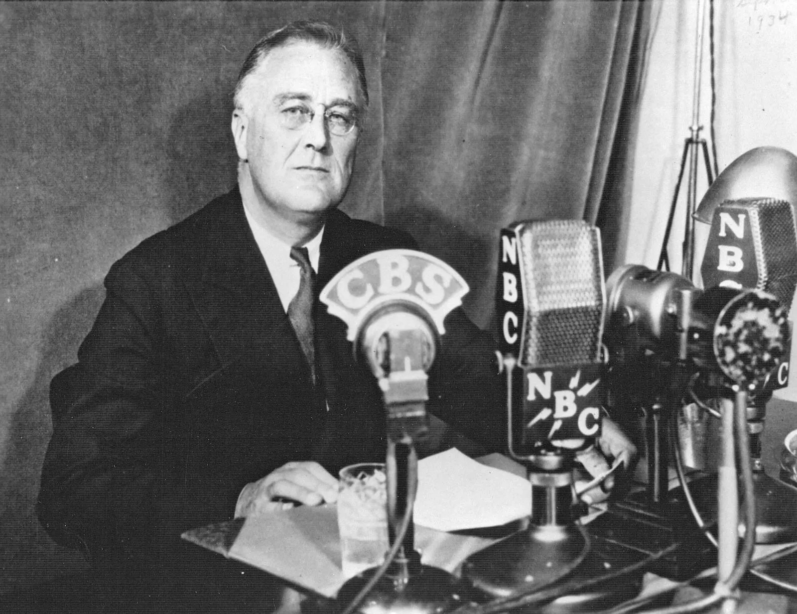
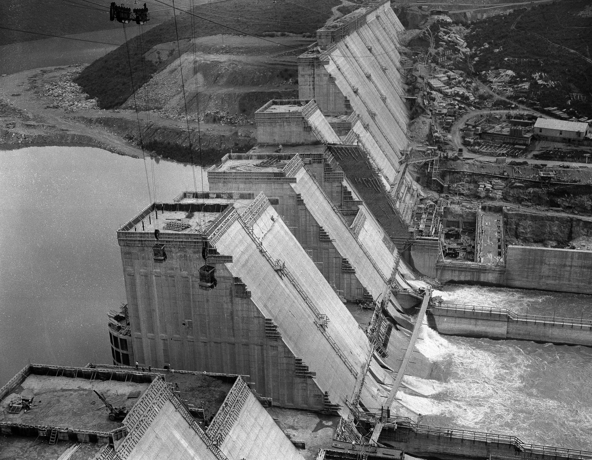
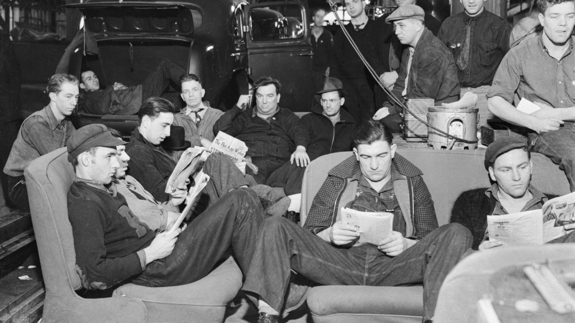
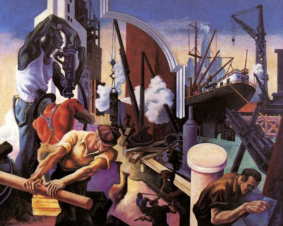
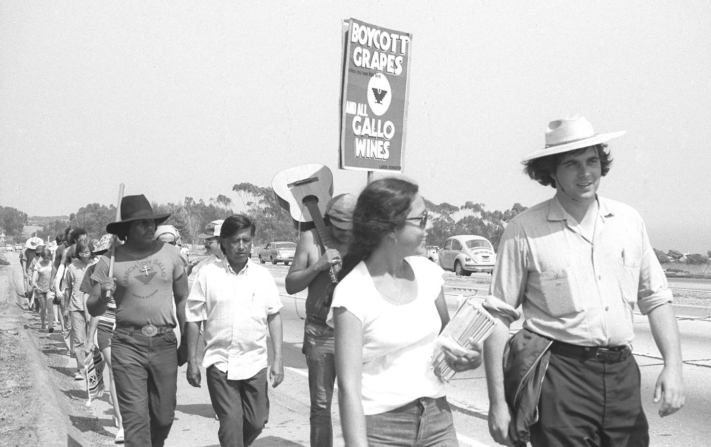
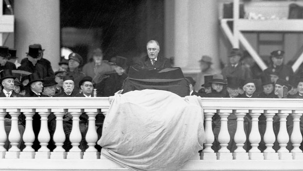
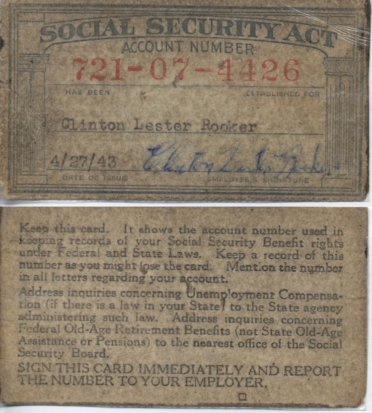

U.S. HISTORY | SEMESTER 1 | LESSON 08 | STANDARD 11.6
The New Deal & Labor
Essential Question
How far should the government go to help people in a crisis, and did the New Deal go far enough?
THE NEW DEAL: 1933 TO 1938
1933
FDR's First 100 Days: 15 major bills passed creating the FDIC, SEC, WPA, TVA, and other landmark programs.
1935
Social Security Act creates the first federal retirement and unemployment safety net. NLRA protects workers' right to organize.
1935-37
CIO organizes industrial workers in steel and auto; sit-down strikes win major victories at GM.
1937
Supreme Court strikes down key New Deal programs. FDR proposes court-packing: and loses the political battle.
1938
Fair Labor Standards Act establishes the 40-hour work week and the first federal minimum wage: 25 cents per hour.
On March 4, 1933, Franklin Delano Roosevelt stood in a cold rain in Washington DC and told the American people that "the only thing we have to fear is fear itself." It was a line that has been quoted so often it has lost its original punch. What Roosevelt was doing in that sentence was something specific: he was telling the American people that the banking system had frozen partly because everyone was afraid to deposit money or make investments, and that fear itself had become a self-reinforcing catastrophe. He was promising to break that cycle. In his first hundred days, his administration passed fifteen major pieces of legislation: more than any president before or since in a comparable period. The question was not just whether the programs worked. It was whether the government had the right to do any of it in the first place.
On March 4, 1933, Franklin Roosevelt told the American people that "the only thing we have to fear is fear itself." He was making a specific argument: that the banking crisis had gotten worse partly because everyone was too scared to deposit money or invest, and that fear itself had become part of the problem. He promised to break that cycle. In his first hundred days, his administration passed fifteen major laws: more than any president before or since in that short a time. The question was not just whether the programs worked. It was whether the government had the right to do any of it at all.
CHAPTER ONE
THE FIRST HUNDRED DAYS

FDR delivers a radio "fireside chat," 1930s. Roosevelt used radio to speak directly to American families, explaining his programs and rebuilding public confidence in the banking system and the government. Wikimedia Commons.
The philosophy of the New DealFranklin Roosevelt's program of economic programs from 1933 to 1939 designed to provide relief to the unemployed, recover the economy, and reform the financial system. rested on three R's: reliefImmediate help for people suffering: food, shelter, jobs: to address the most urgent needs of the Depression. (immediate help for those suffering), recoveryRebuilding the economy: getting production, employment, and spending moving again. (rebuilding the economy), and reformChanging the financial and economic system to prevent another Depression from happening. (changing the system to prevent another crash). FDR did not have a single ideology: he was willing to try almost anything and abandon what didn't work. His advisors, called the "Brain Trust," were academics and reformers who had spent years thinking about what a more active government could do. The New Deal was not a single coherent plan. It was an experiment.
The New Deal was built on three ideas: relief (immediate help for people suffering), recovery (getting the economy moving again), and reform (changing the system so it wouldn't crash again). FDR didn't have one rigid ideology: he was willing to try almost anything. His advisors, called the Brain Trust, were professors and reformers who had ideas about what a more active government could do. The New Deal was not a single master plan. It was a set of experiments: and not all of them worked.
The first major act was closing every bank in the country for four days: a "bank holiday": while federal inspectors reviewed their books. The banks that were solvent reopened with a government seal of approval; the ones that weren't stayed closed. FDR then went on radio to explain what he had done, in plain language, to the American families sitting in their living rooms. Millions of people who had been keeping their savings under mattresses promptly went back to the bank. The fireside chats: regular radio addresses delivered in a conversational tone: rebuilt confidence not just in the banking system but in the idea that the government was on the side of ordinary Americans.
FDR's first act was to close every bank in the country for four days while inspectors checked their books. Sound banks reopened with government approval; insolvent ones stayed closed. Then FDR went on radio and explained what he had done in plain language, speaking directly to American families. Millions of people who had been hiding their savings at home went back to the bank. These radio addresses: called fireside chats: rebuilt public confidence not just in banking, but in the idea that the government was working for ordinary people.
DID YOU KNOW
The first federal minimum wage established by the Fair Labor Standards Act in 1938 was 25 cents per hour: which sounds laughable today, but at the time it was a revolutionary act. For the first time in American history, the federal government declared that no employer had the right to pay a worker less than a set amount, no matter what the market would tolerate. The argument that had to be won to get there: that workers had rights the government was obligated to protect: had been fought for decades by labor organizers who were beaten, imprisoned, and killed for making it.
CHAPTER TWO
THE PROGRAMS THAT CHANGED AMERICA

A Tennessee Valley Authority dam under construction, 1930s. The TVA brought electricity to rural Appalachia for the first time: and employed thousands of workers. It is still operating today. Wikimedia Commons.
The scale of the New Deal programs was unprecedented in American history. The Works Progress AdministrationA New Deal agency that put 8.5 million unemployed Americans to work building roads, bridges, schools, airports, and public buildings, and employed artists, writers, and musicians as well. (WPA) put 8.5 million people to work building or improving more than 650,000 miles of roads, 125,000 public buildings, 75,000 bridges, and thousands of parks and public spaces. It also employed artists to paint murals in post offices, writers to document American life, and musicians to perform in public venues: because FDR's administration believed that cultural workers were also workers. The Social SecurityA federal program created in 1935 that provides retirement income to older Americans, funded by payroll taxes on workers and employers. Act of 1935 created the first federal retirement system and unemployment insurance. The TVATennessee Valley Authority: a federal agency that built dams and power plants along the Tennessee River, bringing electricity to rural areas that private companies refused to serve. brought electricity to rural Appalachia, where private utilities had refused to run power lines because the population was too scattered to be profitable.
The New Deal programs were unlike anything the United States had done before. The Works Progress Administration (WPA) put 8.5 million people to work building roads, bridges, schools, and public buildings. It also hired artists, writers, and musicians: because the government believed cultural workers were workers too. Social Security, created in 1935, gave retirement income to elderly Americans and established unemployment insurance for workers who lost their jobs. The Tennessee Valley Authority (TVA) built dams and power plants along the Tennessee River, bringing electricity for the first time to rural Appalachia, where private companies refused to go because there wasn't enough profit in it.
The banking reforms were as important as the relief programs. The FDICFederal Deposit Insurance Corporation: a New Deal agency that insures bank deposits, so that if a bank fails, customers get their money back up to a set limit. insured bank deposits so that a bank failure would never again wipe out a family's life savings. The SECSecurities and Exchange Commission: a New Deal agency that regulates the stock market, requiring companies to disclose financial information and preventing the kind of fraud and speculation that led to the 1929 crash. regulated the stock market, requiring companies to disclose their finances and preventing the speculative frauds that had contributed to the crash. Together, these two agencies addressed the specific failures that had turned a recession into the Great Depression. The Supreme Court struck down several New Deal programs as unconstitutional overreach of federal power: including the original version of the National Recovery Administration. FDR responded by proposing to add six new justices to the Court, one for each justice over age 70: the "court-packing" scheme. Congress rejected it. But the Court, influenced by political pressure and new appointments, began upholding New Deal programs afterward in what critics called "the switch in time that saved nine."
The banking reforms were as important as the jobs programs. The FDIC insured bank deposits: so that if a bank failed, customers would get their money back. The SEC regulated the stock market, requiring companies to disclose their finances and preventing the kind of fraud that had contributed to the 1929 crash. The Supreme Court struck down several New Deal programs as unconstitutional. FDR responded by threatening to add six new justices to the Court: the "court-packing" scheme. Congress rejected it. But the Court, under political pressure, began upholding New Deal programs anyway in what critics called "the switch in time that saved nine."
FAST FACTS
THE NEW DEAL IN NUMBERS
8.5MAmericans employed by the WPA at its peak: building roads, bridges, schools, and public buildings across the country
100days in FDR's first hundred days: during which Congress passed 15 major pieces of legislation, more than any comparable period in American history
$0.25the first federal minimum wage established in 1938: 25 cents per hour: the first time the federal government declared employers couldn't pay less
40hours per week established as the standard work week by the Fair Labor Standards Act of 1938: work beyond that required overtime pay
CHAPTER THREE
LABOR RISES

Workers occupy a General Motors plant in Flint, Michigan, during the 1936-37 sit-down strike. The strike forced GM to recognize the United Auto Workers union: one of the most significant victories in American labor history. Wikimedia Commons.
The National Labor Relations Act of 1935: called the Wagner Act: was the most important piece of labor legislation in American history. It guaranteed workers the right to collective bargainingThe process by which workers negotiate together through a union with their employer for better wages, hours, and working conditions.: the right to form unions and negotiate as a group rather than individually. Before the Wagner Act, employers could fire workers for union activity, use private armies to break strikes, and force workers to sign contracts promising not to join unions. The NLRBNational Labor Relations Board: the federal agency created by the Wagner Act to protect workers' right to organize and to referee disputes between unions and employers. (National Labor Relations Board) enforced these rights. The effect was immediate: union membership surged.
The National Labor Relations Act of 1935: called the Wagner Act: was the most important labor law in American history. It guaranteed workers the right to collective bargaining: to form unions and negotiate together for better wages and conditions. Before this law, employers could fire workers for joining unions, hire private armies to break strikes, and force workers to sign contracts promising not to organize. The National Labor Relations Board (NLRB) enforced these new rights. Union membership immediately surged.
Two different visions of labor organizing competed for dominance. The AFLAmerican Federation of Labor: a federation of craft unions organizing skilled workers in specific trades like carpentry, plumbing, and printing. (American Federation of Labor) organized skilled craft workers: carpenters, plumbers, electricians: in specialized unions that excluded unskilled industrial workers. The CIOCongress of Industrial Organizations: a federation that organized all workers in an industry together, regardless of their specific job: including steelworkers, auto workers, and rubber workers. (Congress of Industrial Organizations) broke from the AFL to organize all workers in a given industry together: skilled and unskilled, Black and white in many cases. When CIO-affiliated auto workers occupied General Motors plants in Flint, Michigan, in December 1936 in a sit-down strike: refusing to leave the factory: and held them for 44 days, GM negotiated rather than destroy the plant. The UAW won recognition. It was a seismic moment: the largest corporation in the world had been forced to bargain with its workers.
Two visions of labor organizing competed. The AFL organized skilled workers in specific trades: carpenters, plumbers, electricians. The CIO broke away to organize all workers in an industry together, skilled and unskilled. When CIO-affiliated auto workers occupied General Motors plants in Flint, Michigan in December 1936: refusing to leave the factory: and stayed for 44 days, GM negotiated rather than destroy the plant. The United Auto Workers won recognition. It was a defining moment: the largest corporation in the world had been forced to bargain with its workers.
ART SPOTLIGHT

America Today (panel detail): Thomas Hart Benton, 1930-31
Benton painted this ten-panel mural series for the New School for Social Research in New York, depicting American workers, industry, and daily life across the country. The murals are now held at the Metropolitan Museum of Art.
Benton painted "America Today" just before the Depression hit its worst, but it was widely reproduced during the New Deal as an image of what American labor looked like and what it deserved. The WPA hired more than 5,000 artists during the Depression to paint murals in post offices, courthouses, and public buildings across the country: including several in San Diego. Many of those murals are still visible today in federal buildings. The WPA art program was not charity; it was the federal government arguing that art was work, and that culture was part of what made a society worth rebuilding.
CHAPTER FOUR
WHO THE NEW DEAL LEFT OUT
The New Deal was the most ambitious expansion of federal power in American history. It was also a deeply compromised program that deliberately excluded millions of Americans in order to win the political support to pass at all. The Social Security Act excluded domestic workers and agricultural workers from its coverage: categories that covered the vast majority of Black Americans in the South. This was not accidental. Southern Democratic senators, whose votes FDR needed, refused to support any program that applied equally to Black and white workers. The result was a safety netA set of government programs designed to catch people when they fall: providing income, food, healthcare, or housing support when people lose jobs or face other crises. with holes large enough to exclude an entire race.
The New Deal was the biggest expansion of federal power in American history: and it was also deeply unequal. Social Security excluded domestic workers and farmworkers from its coverage. This was not a coincidence. Southern Democratic senators whose votes FDR needed refused to support any program that applied equally to Black and white workers. Since most Black Americans in the South worked as farmworkers or domestic workers, they were excluded. The New Deal's safety net had a hole large enough to leave millions of Black Americans outside it.

United Farm Workers marchers with the UFW eagle flag, 1960s-1970s. Farmworkers: excluded from the New Deal's labor protections: organized their own movement thirty years later. Wikimedia Commons.
The United Farm WorkersA labor union co-founded by César Chávez and Dolores Huerta in 1962 to organize farmworkers who had been excluded from the labor protections won by other workers in the 1930s., co-founded by César Chávez and Dolores Huerta in California in the 1960s, was the direct consequence of the New Deal's exclusions. Farmworkers: whose right to organize was not protected by the Wagner Act: had to fight for the protections that industrial workers had won in the 1930s. The UFW's grape boycott, their marches through the Central Valley, and their hunger strikes were not a different movement from New Deal labor organizing. They were the same movement, continuing the argument that all workers deserve dignity and protection, thirty years later and in the fields rather than the factories.
The United Farm Workers, co-founded by César Chávez and Dolores Huerta in California in the 1960s, was a direct consequence of the New Deal's failures. Farmworkers were not protected by the Wagner Act. They had to fight in the 1960s and 1970s for the basic protections that factory workers had won in the 1930s. The UFW grape boycott, their marches through the Central Valley, and their hunger strikes were not a separate movement: they were the continuation of the same argument: that all workers, regardless of what they grow or where they work, deserve dignity and fair treatment.
Real-world connection: California's agricultural workers still do not have the same labor protections as industrial workers under federal law. The California Agricultural Labor Relations Act of 1975, passed in part because of UFW organizing, provides state-level protections: but the exclusions built into the 1935 Wagner Act have never been fully corrected at the federal level.
Real-world connection: California's farmworkers gained state-level labor protections in 1975 because of UFW organizing. But the exclusions built into the 1935 Wagner Act have still never been fully corrected at the federal level. The gaps the New Deal built in have never fully been filled.
PRIMARY SOURCE MOMENT

Crowd gathered for Franklin D. Roosevelt's Second Inauguration, January 20, 1937. Library of Congress or Wikimedia Commons.
"The test of our progress is not whether we add more to the abundance of those who have much; it is whether we provide enough for those who have too little. I see one-third of a nation ill-housed, ill-clad, ill-nourished. It is not in despair that I paint you that picture. I paint it for you in hope: because the Nation, seeing and understanding the injustice in it, proposes to paint it out."
Franklin D. Roosevelt, Second Inaugural Address, January 20, 1937
WHY THIS MATTERS: FDR gave this address in 1937, four years into the New Deal. He defined progress as helping people who had too little, not adding more wealth to people who already had much. That idea connects directly to the lesson's question: how far should the government go in a crisis, and did the New Deal reach everyone who needed help?
THEN AND NOW
THE NEW DEAL BUILT THE FLOOR UNDER AMERICAN LIFE: AND THE DEBATE ABOUT HOW HIGH THAT FLOOR SHOULD BE HAS NEVER ENDED.
1930s

An early Social Security card or Social Security Board record from the 1930s. Social Security turned New Deal relief into a permanent federal safety net. Social Security Administration History Archives or Wikimedia Commons.
NOW
Modern farmworker organizers: continuing the work the New Deal started but did not finish. CC license.
THEN
In the 1930s, the New Deal built institutions that had never existed in the United States: a federal retirement system, unemployment insurance, insured bank deposits, stock market regulation, a minimum wage, and a protected right to organize. The early Social Security card represented a major shift: the federal government now accepted responsibility for helping older Americans avoid poverty. These programs were built imperfectly, with deliberate exclusions that left millions of workers outside their protection.
NOW
Today, Social Security, the FDIC, the SEC, the minimum wage, and the right to organize are all still part of American law. The farmworkers who were excluded from New Deal protections organized their own movement and won partial protections in California. The debate about how high the minimum wage should be, how broad Social Security should be, and how much protection workers deserve is still happening: in every congressional session and every election.
CONNECTION
The New Deal answered the question "how far should the government go?" with a specific and contested answer: far enough to provide a floor under American life: retirement, unemployment insurance, regulated banking, a minimum wage. Every expansion of that floor since 1938 has been fought over using the same arguments FDR and his opponents made in the 1930s. The New Deal did not end that argument. It established the terms of it.
FDR promised "no one is left out": but the New Deal's exclusions left out the most vulnerable workers on purpose. Is a program that helps most people but deliberately excludes some still a good program? What would you have demanded be changed?